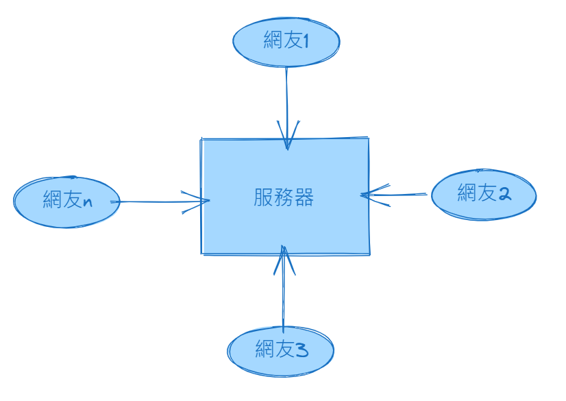

使用者直接用瀏覽器打開自己電腦裡的 index.html。
簡化示意
從輸入網址到看見網頁
切換不同情境，觀察 HTML 檔案如何從「只有自己能看」變成「透過伺服器被瀏覽器取得」。
file:///index.html
沒有 Web 伺服器回應其他人的 HTTP 請求。
可訪問範圍：只有自己
直接打開本機檔案適合練習，但它不是「網站已上線」。朋友的瀏覽器不會自動知道你電腦裡的檔案位置。

簡化示意
切換不同情境，觀察 HTML 檔案如何從「只有自己能看」變成「透過伺服器被瀏覽器取得」。
使用者直接用瀏覽器打開自己電腦裡的 index.html。
沒有 Web 伺服器回應其他人的 HTTP 請求。
直接打開本機檔案適合練習，但它不是「網站已上線」。朋友的瀏覽器不會自動知道你電腦裡的檔案位置。
